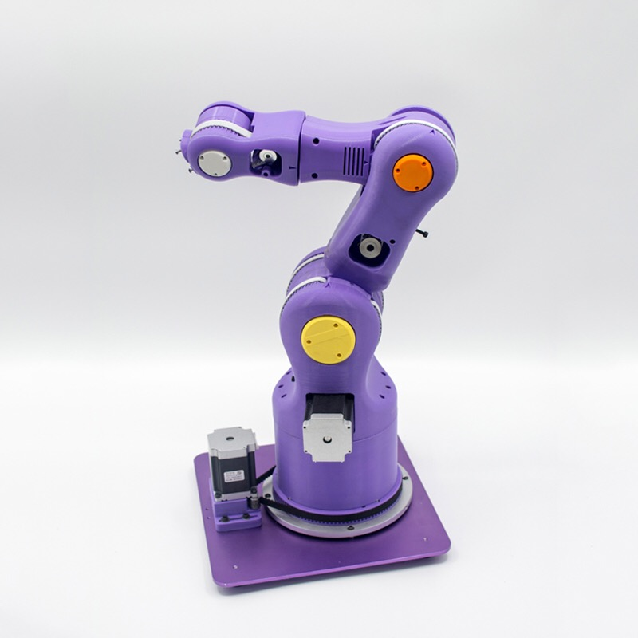
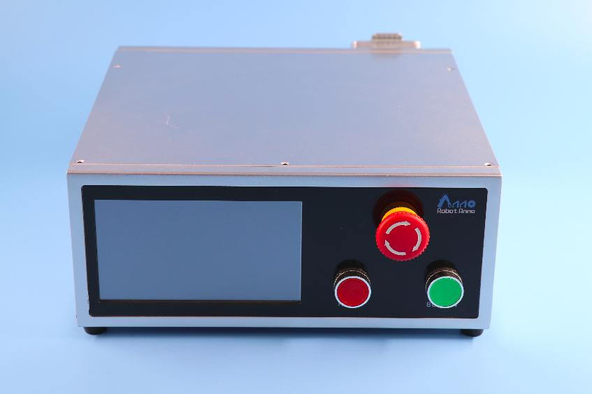
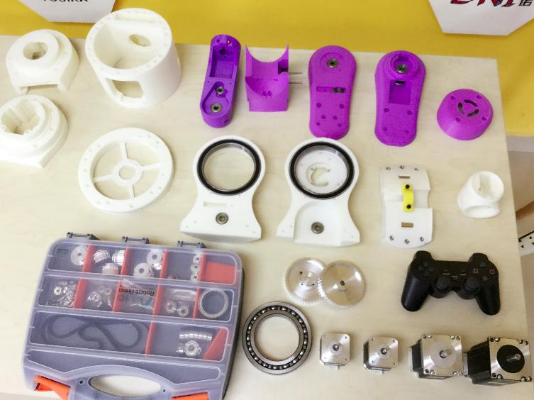

1. 合作伙伴产品推荐
1.1. 安诺机械臂
1.1.1. 产品介绍
RobotAnno V6 是一款重量轻、运行速度快、重复定位精度高和高性价比的消费级桌面机械臂。采用工程塑料作为机器人本体材质,外形小巧、体积小,能够高速、高精度的完成上下料、分拣、装配等各项工作。能够在狭小的空间内灵活的进行作业,而其量级轻、便携式的特点,使安排生产线总体布局时具有很大的灵活性。多轴联动插补控制算法,保证了机器人具有高精度的控制。产品支持 PC、手机 APP、示教器等多种智能交互控制方式。提供串口、蓝牙、WIFI 等丰富的通讯方式进行二次开发。不仅广泛应用于教育示教、创客 DIY,还全面应用于轻工业加工,支持在生产应用中稳定高效使用。产品远销海内外高校,产品长期销售到香港大学、清华大学、台湾交大、国防科技大学、云南大学等高校。获得客户的亲睐!
1.1.2. 应用领域
教育行业:机械装配教学、机器人知识普及、机器学习教学、创客教育、机器人二次开发、机器人职业教育课程 轻工业:码垛、搬运、装配、包装、切割、喷涂、雕刻、贴标、印刷 服务业:倒水、沏茶、调酒、下棋、拍摄、医疗服务
1.1.3. 照片展示
  